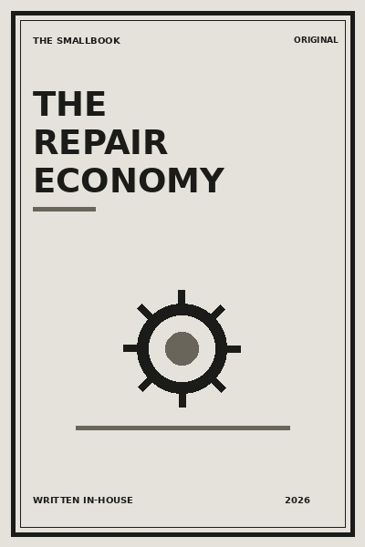

Library › Business & Startups
The Repair Economy - Summary & Key Lessons

Repair, maintenance and reuse are quiet forms of innovation that save money, build trust and reduce waste.
📖 OPEN THE FULL INTERACTIVE BREAKDOWN →🌐 Read it in Hindi, Hinglish, Gujarati, Tamil & 22 more languages, with audio.
💡 The Big Idea
Repair, maintenance and reuse are quiet forms of innovation that save money, build trust and reduce waste. The lessons below are designed to be used slowly: read one, try it in a real situation, and return with evidence rather than agreement.
🧠 The 8 Key Lessons
Lesson 1: See the Whole Life
Chapter 1: See the Whole Life
A purchase has a life beyond its price: maintenance, repair, resale and disposal. Repair, maintenance and reuse are quiet forms of innovation that save money, build trust and reduce waste. The useful question is not whether this is perfectly true in every situation, but what it helps you notice before you act. Most people skip this step because the visible task feels urgent. The book asks you to slow down long enough to identify the constraint, trade-off or relationship underneath the task. Once that is clear, a smaller and more reliable move becomes possible. Repeated over time, that move changes the system rather than merely decorating the surface of it.
📖 Example: A family compares two appliances by service availability, not only the sticker price. The point is not to copy the situation exactly. Notice the sequence: make the hidden condition visible, choose the next action that respects it, and then observe what happens. That turns a memorable story into a testable practice instead of a slogan. Read the full example →
⚡ Do this: Before a purchase, ask what it will cost to keep working for five years.
Lesson 2: Design for Repair
Chapter 2: Design for Repair
Products and systems become more valuable when a small failure does not force replacement. Repair, maintenance and reuse are quiet forms of innovation that save money, build trust and reduce waste. The useful question is not whether this is perfectly true in every situation, but what it helps you notice before you act. Most people skip this step because the visible task feels urgent. The book asks you to slow down long enough to identify the constraint, trade-off or relationship underneath the task. Once that is clear, a smaller and more reliable move becomes possible. Repeated over time, that move changes the system rather than merely decorating the surface of it.
📖 Example: A shop chooses modular shelves so one damaged part can be changed. The point is not to copy the situation exactly. Notice the sequence: make the hidden condition visible, choose the next action that respects it, and then observe what happens. That turns a memorable story into a testable practice instead of a slogan. Read the full example →
⚡ Do this: Identify one system you can make easier to repair rather than replace.
Lesson 3: Respect the Repairer
Chapter 3: Respect the Repairer
Repair knowledge is skilled work, not a last resort. Repair, maintenance and reuse are quiet forms of innovation that save money, build trust and reduce waste. The useful question is not whether this is perfectly true in every situation, but what it helps you notice before you act. Most people skip this step because the visible task feels urgent. The book asks you to slow down long enough to identify the constraint, trade-off or relationship underneath the task. Once that is clear, a smaller and more reliable move becomes possible. Repeated over time, that move changes the system rather than merely decorating the surface of it.
📖 Example: A phone technician explains why a cheap part would fail again, building trust through transparency. The point is not to copy the situation exactly. Notice the sequence: make the hidden condition visible, choose the next action that respects it, and then observe what happens. That turns a memorable story into a testable practice instead of a slogan. Read the full example →
⚡ Do this: Ask a repairer one question about how to extend the life of something you own.
Lesson 4: Keep Maintenance Records
Chapter 4: Keep Maintenance Records
Memory is a poor maintenance system. Simple records prevent repeat mistakes. Repair, maintenance and reuse are quiet forms of innovation that save money, build trust and reduce waste. The useful question is not whether this is perfectly true in every situation, but what it helps you notice before you act. Most people skip this step because the visible task feels urgent. The book asks you to slow down long enough to identify the constraint, trade-off or relationship underneath the task. Once that is clear, a smaller and more reliable move becomes possible. Repeated over time, that move changes the system rather than merely decorating the surface of it.
📖 Example: A housing society logs pump servicing dates and avoids emergency calls in summer. The point is not to copy the situation exactly. Notice the sequence: make the hidden condition visible, choose the next action that respects it, and then observe what happens. That turns a memorable story into a testable practice instead of a slogan. Read the full example →
⚡ Do this: Make a maintenance note for one important item today.
Lesson 5: Value Parts and Standards
Chapter 5: Value Parts and Standards
Quality parts and clear standards reduce hidden risk. Repair, maintenance and reuse are quiet forms of innovation that save money, build trust and reduce waste. The useful question is not whether this is perfectly true in every situation, but what it helps you notice before you act. Most people skip this step because the visible task feels urgent. The book asks you to slow down long enough to identify the constraint, trade-off or relationship underneath the task. Once that is clear, a smaller and more reliable move becomes possible. Repeated over time, that move changes the system rather than merely decorating the surface of it.
📖 Example: A bicycle shop labels genuine and compatible parts with honest price differences. The point is not to copy the situation exactly. Notice the sequence: make the hidden condition visible, choose the next action that respects it, and then observe what happens. That turns a memorable story into a testable practice instead of a slogan. Read the full example →
⚡ Do this: When repairing something, ask what standard or warranty the part carries.
Lesson 6: Make Reuse Convenient
Chapter 6: Make Reuse Convenient
Reuse wins when it is easier than disposal. Repair, maintenance and reuse are quiet forms of innovation that save money, build trust and reduce waste. The useful question is not whether this is perfectly true in every situation, but what it helps you notice before you act. Most people skip this step because the visible task feels urgent. The book asks you to slow down long enough to identify the constraint, trade-off or relationship underneath the task. Once that is clear, a smaller and more reliable move becomes possible. Repeated over time, that move changes the system rather than merely decorating the surface of it.
📖 Example: An office keeps a small shelf for working cables and stationery instead of rebuying them. The point is not to copy the situation exactly. Notice the sequence: make the hidden condition visible, choose the next action that respects it, and then observe what happens. That turns a memorable story into a testable practice instead of a slogan. Read the full example →
⚡ Do this: Create one labelled place for reusable items.
Lesson 7: Build Local Trust
Chapter 7: Build Local Trust
Repair businesses grow through reliability, clear estimates and word of mouth. Repair, maintenance and reuse are quiet forms of innovation that save money, build trust and reduce waste. The useful question is not whether this is perfectly true in every situation, but what it helps you notice before you act. Most people skip this step because the visible task feels urgent. The book asks you to slow down long enough to identify the constraint, trade-off or relationship underneath the task. Once that is clear, a smaller and more reliable move becomes possible. Repeated over time, that move changes the system rather than merely decorating the surface of it.
📖 Example: A tailor texts a photo before making an unexpected alteration. The point is not to copy the situation exactly. Notice the sequence: make the hidden condition visible, choose the next action that respects it, and then observe what happens. That turns a memorable story into a testable practice instead of a slogan. Read the full example →
⚡ Do this: If you run a service, send one proactive clarity update this week.
Lesson 8: Count the Savings Broadly
Chapter 8: Count the Savings Broadly
Repair saves materials, time and confidence, not just money. Repair, maintenance and reuse are quiet forms of innovation that save money, build trust and reduce waste. The useful question is not whether this is perfectly true in every situation, but what it helps you notice before you act. Most people skip this step because the visible task feels urgent. The book asks you to slow down long enough to identify the constraint, trade-off or relationship underneath the task. Once that is clear, a smaller and more reliable move becomes possible. Repeated over time, that move changes the system rather than merely decorating the surface of it.
📖 Example: Fixing a school fan prevents a hot classroom and a rushed replacement purchase. The point is not to copy the situation exactly. Notice the sequence: make the hidden condition visible, choose the next action that respects it, and then observe what happens. That turns a memorable story into a testable practice instead of a slogan. Read the full example →
⚡ Do this: Write down one item you repaired or maintained and what it saved beyond cash.
✅ 5-Step Action Plan
- Before a purchase, ask what it will cost to keep working for five years.
- Identify one system you can make easier to repair rather than replace.
- Ask a repairer one question about how to extend the life of something you own.
- Make a maintenance note for one important item today.
- When repairing something, ask what standard or warranty the part carries.
⚠️ When This Doesn't Work
A book can offer a useful lens, not a universal rule. Your money, health, family duties, workplace power and access to support change what is possible. Keep the principle, adapt the practice, and ask for expert help where the stakes are high.
💀 The Graveyard Proves It
💬 Best Quotes from The Repair Economy
- “Repair, maintenance and reuse are quiet forms of innovation that save money, build trust and reduce waste.”
- “Small, honest experiments are more useful than impressive intentions.”
- “A good idea becomes valuable only when it changes the next choice.”
Interactive version: mark lessons as read, listen in your language, share quote cards.